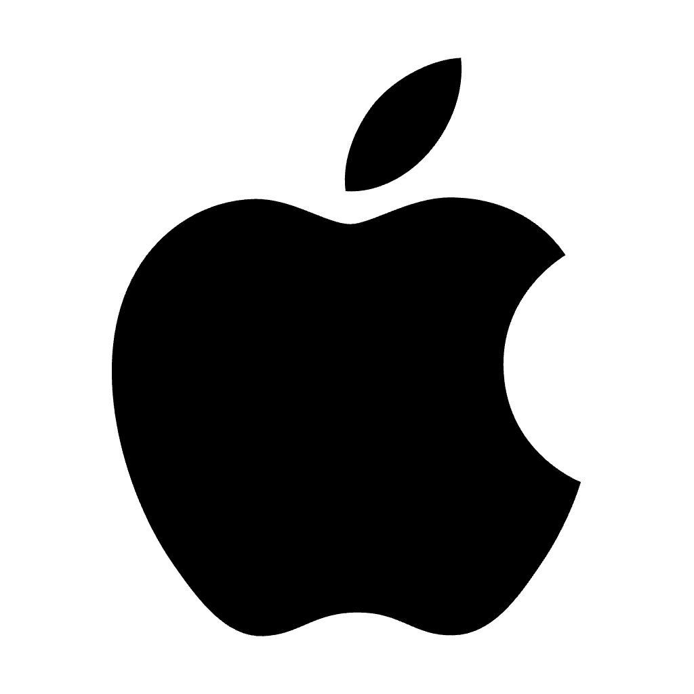
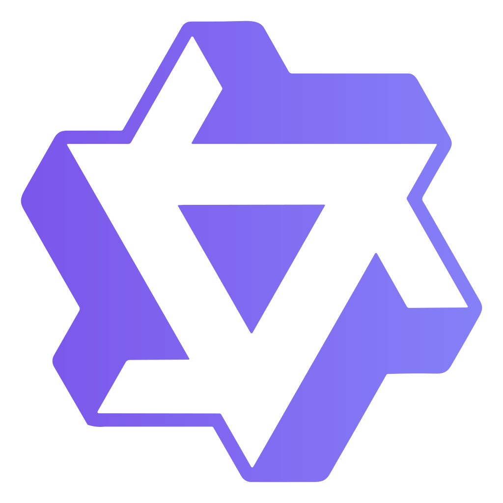

Weixiang Yan
颜为骧
Research Scientist @ Apple
yanweixiang.ywx (at) gmail.com
California, USA
👋 Hi there! I am a Senior Research Scientist on the Apple

Foundation Model team, where I lead post-training for agentic coding and reinforcement learning for computer-use agents.
My research focuses on building LLM agents that can write code, operate computers, and serve as proactive personal assistants.
Outside of work, I am a tennis enthusiast 🎾 and love running 🏃.
Experiences
- 2025.12 - Now: Senior Research Scientist, Apple , Foundation Model Team, Cupertino, California, USA
- 2024.12 - 2025.12: Applied Scientist II, Amazon , Generative Foundation Modeling Team, Palo Alto, California, USA
- 2022.07 - 2023.01: Alibaba Qwen Team

, advised by Dr. Wen Wang and Dr. Qian Chen, Hangzhou, China
- 2021.06 - 2021.10: Microsoft Research Asia , advised by Dr. Yuanchun Li, Beijing, China
Education
- 2023.09 - 2024.12: Master of Science in Computer Science, University of California, Santa Barbara, California, USA
- 2018.09 - 2022.06: B.Eng. & B.Mgt., Beijing University of Posts and Telecommunications, Beijing, China
Publications
2026
2025
2024
2023
~2022
Services
- AC: ACL, ARR, AAAI
- Reviewer: ICLR, NeurIPS, ACL, EMNLP, ARR, AAAI, EACL and others.